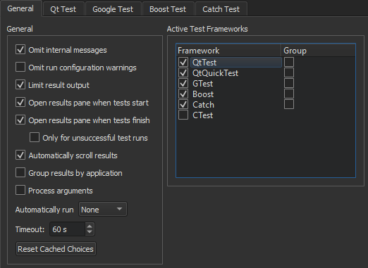
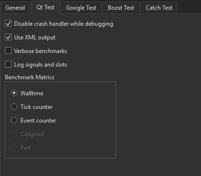
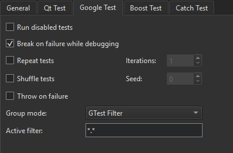
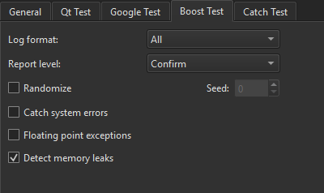
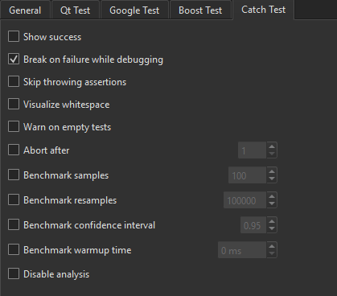
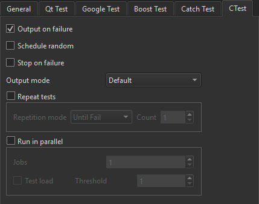

Running Autotests
Qt Creator supports both code based tests and build system based tests. Code based testing provides special handling for particular testing frameworks that is strongly tied to the underlying code models or specialized parsers. Build system based testing is independent from any testing frameworks. It retrieves information directly from the underlying build system and uses it or even the build system as such to execute the respective tests.
Qt Creator integrates the following testing frameworks for unit testing applications and libraries:
- Boost.Test
- Catch2 test framework
- Google C++ Testing Framework
- Qt Test framework
Additional build system based support is provided for CTest.
You can use Qt Creator to create, build, and run code based tests for your projects.

Build System Based Tests
The handling of build system based tests is disabled by default to avoid interference with code based parsers. To enable build system based tests, select the respective test tool in Options > Testing > General.
The detection of tests is usually much faster for build system based tests as this normally does not involve scanning or parsing. The information provided inside the tests tree is usually more detailed when using code based tests.
If you have enabled code based and build system based tests together you may duplicate tests inside the tests tree. See also Selecting Tests to Run.
Creating Tests
You can use a wizard to create projects that contain tests.
Creating Qt and Qt Quick Tests
To create a Qt or Qt Quick test:
- Select File > New File or Project > Other Project > Auto Test Project > Choose to create a project with boilerplate code for a Qt test or a Qt Quick test.
- In the Project and Test Information dialog, specify settings for the project and test:
- In the Test framework field, select Qt Test or Qt Quick Test.
- For a Qt test, select the GUI Application check box to create a Qt application.
- In the Test case name field, enter a name for the test case.
- For a Qt test, select the Requires QApplication check box to add the include statement for QApplication to the main.cpp file of the project.
- Select the Generate initialization and cleanup code checkbox to add functions to your test that are executed by the testing framework to initialize and clean up the test.
- In the Build system field, select the build system to use for building the project: qmake, CMake, or Qbs.
Qt Creator creates the test in the specified project directory. Edit the .cpp file to add private slots for each test function in your test. For more information about creating Qt tests, see Creating a Test.
Creating Google Tests
To create a Google test:
- Select File > New File or Project > Other Project > Auto Test Project > Choose to create a project with boilerplate code for a Google test.
- In the Project and Test Information dialog, specify settings for the project and test:
- In the Test framework field, select Google Test.
- In the Test suite name field, enter a name for the test suite.
- In the Test case name field, enter a name for the test case.
- Select the Enable C++ 11 check box to support C++ 11 features in the test.
- In the Google test repository field, select a directory that contains a clone of the googletest repository.
To use an installed Google C++ Testing framework instead, see Setting Up the Google C++ Testing Framework.
- In the Build system field, select the build system to use for building the project: qmake, CMake, or Qbs.
Qt Creator creates the test in the specified project directory. For more information about creating Google tests, see the Google Test Primer.
Creating Boost Tests
To build and run Boost tests, you must have the Boost.Test installed on the development host. Typically, it is installed when you install Boost. You can download Boost from Boost.org.
If Boost libraries can be found by the used compiler and build system, you do not need to specify the include directory when creating the test.
To create a Boost test:
- Select File > New File or Project > Other Project > Auto Test Project > Choose to create a project with boilerplate code for a Boost test.
- In the Project and Test Information dialog, specify settings for the project and test:
- In the Test framework field, select Boost Test.
- In the Test suite name field, enter a name for the test suite.
- In the Test case name field, enter a name for the test case.
- In the Boost include dir (optional) field, enter the path to the directory that contains files needed by Boost.Test, such as version.hpp and a subfolder called test that contains the test header files.
- In the Build system field, select the build system to use for building the project: qmake, CMake, or Qbs.
Qt Creator creates the test in the specified project directory. For more information about creating Boost tests, see Boost.Test.
Creating Catch2 Tests
To build and run Catch2 tests, you either must have Catch2 libraries and headers installed, or you can use the single include header file provided by the Catch2 repository.
If the Catch2 headers can be found by the used compiler and build system automatically, you do not need to specify the include directory when creating the test.
To create a basic Catch2 test:
- Select File > New File or Project > Other Project > Auto Test Project > Choose to create a project with boilerplate code for a Catch2 test.
- In the Project and Test Information dialog, specify settings for the project and test:
- In the Test framework field, select Catch2.
- In the Test case name field, specify a name to be used for the test case file.
- Select the Use Qt libraries check box to use a self defined main function and set up the project to use Qt features.
- In the Catch2 include directory (optional) field, you may enter a path to the directory that contains the Catch2 header files.
- In the Build system field, select the build system to use for building the project: qmake, CMake, or Qbs.
Qt Creator creates the test in the specified project directory. For more information about creating Catch2 tests, see Catch2.
Creating CTest Based Tests
CTest provides capabilities to execute tests for CMake based projects and is not limited to a special test framework. You simply configure tests inside the project files, usually CMakeLists.txt. Basically this is done by enabling testing for the project and registering the test applications or even special commands.
enable_testing() add_test(NAME test_example COMMAND test_example)
test_example must of course be added as an executable before trying to register it as test or it may be any command that can be executed including arguments. For detailed information on how to use CTest see Testing with CTest.
Setting Up the Google C++ Testing Framework
To build and run Google tests, you must have the Google C++ Testing framework installed and configured on the development host. You can either clone it from Git Hub or install it from an installation package.
To configure a project to use a cloned Google testing framework, edit the INCLUDEPATH variable in the project file (.pro) to include the source and include folders of Google Test's googletest and googlemock. Usually, you need to add the following subfolders:
googletestgooglemockgoogletest/includegooglemock/include
You also need to add the necessary files to the SOURCES variable. For example:
googletest/src/gtest-all.ccgooglemock/src/gmock-all.cc
To configure a project to use an installed Google testing framework package, add the following include paths to the .pro file:
<googletest_install_path>/include/gtest<googletest_install_path>/include/gmock
Then add linker options to be able to find the libraries and to link against them. For example, for qmake based projects, you typically need to add the following values to the .pro file:
LIBS += -lgtest -L<path_to_gtest_lib>LIBS += -lgmock -L<path_to_gmock_lib>
Building and Running Tests
To build and run tests:
- Open a project that contains tests.
- In the Tests view, select the tests to run.
- In the Test Results output pane, select:
 (Run All Tests) to run all tests.
(Run All Tests) to run all tests.- (Run Selected Tests) to run the selected tests.
- (Run Failed Tests) to re-run the tests which failed in the last run. Depending on the framework this may select additional tests if it is impossible to distinguish or to fully address the test.
- (Run Tests for Current File) to run the tests in the file currently open in the code editor.
By default, Qt Creator builds a project before deploying and running it. To run all tests without building and deploying them again, select Run All Tests Without Deployment in the context menu. To run the selected tests without deployment, select Run Selected Tests Without Deployment.
The functions to run tests are also available in the context menu in the Tests view and in Tools > Tests.
Note: If you have enabled build system based and code based tests, you may run tests twice when using Run All Tests or Run Selected Tests. This happens if the tests can be found by the code based test frameworks and are registered as test with the build system.
If a test takes more than a minute to execute, the default timeout might stop the test execution. To increase the timeout, select Tools > Options > Testing > General.
Selecting Tests to Run
The Tests view shows all the tests found for the currently active test frameworks in the current project. Select the test cases to run.

If a Qt Quick test case does not have a name, it is marked Unnamed in the list. Unnamed test cases are executed when you select Run All Tests. You cannot select or deselect them.
Qt Creator scans the project for tests when you open the project and updates the test list for the currently active test frameworks when you edit tests. To refresh the view, select Rescan Tests in the context menu.
To show or hide init and cleanup or data functions in the Tests view, select  (Filter Test Tree), and then select Show Init and Cleanup Functions or Show Data Functions. Double-click a function in the list to open its source code in the code editor.
(Filter Test Tree), and then select Show Init and Cleanup Functions or Show Data Functions. Double-click a function in the list to open its source code in the code editor.
The test cases are listed in alphabetic, case insensitive order. To list them in the order in which they are defined in the source code, select (Sort Naturally).
Running and Debugging Tests from Code Editor
You can run and debug tests in the file currently open in the code editor. To run all tests in the open file, select Tools > Tests > Run Tests for Current File.
Note: Available only for code based test frameworks.
To run the test currently selected in the open file, select Run Test Under Cursor in the context menu.
Note: Available only for code based test frameworks.
To debug the currently selected test, select Debug Test Under Cursor in the context menu.
Note: Availability for build system based tests depends on the build system tool's abilities.
Specifying Test Settings
To customize the handling of tests, test frameworks, and test tools, select Tools > Options > Testing > General.

You can customize some settings at project level. To change settings for the current project instead of globally, select Projects > Project Settings > Testing.
In the Active Test Frameworks list you can select which tests Qt Creator will handle. To improve the performance of full scans for tests, disable test frameworks you are not using.
To group related test cases for an active test framework, select the Group check box next to the framework name in the Active Test Frameworks list. By default, tests are grouped based on the directory where they are located.
Internal messages and run configuration warnings for deduced configurations are omitted by default. To view them, deselect the Omit internal messages and Omit run configuration warnings check boxes.
By default, test result output is limited to 100,000 characters. The output pane is automatically scrolled down when new results are added. To display full results, deselect the Limit result output check box. To disable automatic scrolling, deselect the Automatically scroll results check box.
Test results can be grouped by the executable path that was used to run the tests. This is useful if you have multiple test executables and run them all at once. To enable this functionality you need to select the Group results by application check box.
It is possible to automatically run the currently available tests after successfully building the current project. In Automatically run, select which tests should be run after a successful build.
In some special setups, Qt Creator cannot deduce which executable or run configuration it should use. If Qt Creator repeatedly asks you to select the tests to run when trying to execute tests, you can enable it to cache your choices and use them were appropriate. The cached information is cleared when you switch to another project, close the current one, or select Reset Cached Choices.
Specifying Settings for Running Qt Tests
The code inside a benchmark test is measured, and possibly also repeated several times in order to get an accurate measurement. This depends on the measurement back-end that you can select in the Benchmark Metrics group in Tools > Options > Testing > Qt Test: walltime, CPU tick counter, event counter, Valgrind Callgrind, and Linux Perf. For more information, see Creating a Benchmark.

To receive verbose output when running benchmarks, select the Verbose benchmarks check box.
To allow the debugger to interrupt Qt tests on assertions, select the Disable crash handler while debugging check box.
To record information about signals and slots in the test log, select the Log signals and slots check box.
Specifying Settings for Running Google Tests
To specify settings for running Google tests, select Tools > Options > Testing > Google Test.

To run disabled tests, select the Run disabled tests check box.
To run several iterations of the tests, select the Repeat tests check box and enter the number of times the tests should be run in the Iterations field. To make sure that the tests are independent and repeatable, you can run them in a different order each time by selecting the Shuffle tests check box.
To turn failures into debugger breakpoints, select the Break on failure while debugging check box. To turn assertion failures into C++ exceptions, select the Throw on failure check box.
To group Google tests by using a GTest filter, select GTest Filter in the Group mode field, and specify the filter to use in the Active filter field. For more information about GTest filters, see Running a Subset of the Tests.
Specifying Settings for Running Boost Tests
- To specify settings for running Boost tests, select Tools > Options > Testing > Boost Test.

- In the Log format field, select the error report format to specify the type of events you want recorded in the test report.
- In the Report level field, select the verbosity level of the test result report. Select No if you do not want a report.
- Select the Randomize check box to execute the tests in a random order, using the seed specified in the Seed field for initializing the randomizer.
- Select the Catch system errors check box to catch system errors.
- Select the Floating point exceptions check box to detect floating point exceptions.
- Select the Detect memory leaks check box to detect memory leaks.
Specifying Settings for Running Catch2 Tests
- To specify settings for running Catch2 tests, select Tools > Options > Testing > Catch Test.

- Select the Show success check box to show succeeding expressions as well. By default Catch2 will print only fails.
- Select the Break on failure while debugging check box to turn failures into debugger breakpoints.
- Select the Skip throwing assertions check box to skip any assertion that test for throwing an exception.
- Select the Visualize whitespace check box to turn whitespace into escape sequences.
- Select the Warn on empty tests check box to get a warning when a test case does not check any assertion.
- Select the Abort after check box to abort the test after the number of failures specified inside the spin box.
- Select the Benchmark samples check box to specify the number of samples to be collected while running benchmarks.
- Select the Benchmark resamples check box to specify the number of resamples to be used for the statistical bootstrapping performed after the benchmarking.
- Select the Benchmark confidence interval check box to specify the confidence interval used for the statistical bootstrapping.
- Select the Benchmark warmup time check box to specify the warmup time for each test before benchmarking start.
- Select the Disable analysis check box to disable the statistical analysis and bootstrapping.
Specifying Settings for Running CTest-Based Tests
- To specify settings for running CTest-based tests, select Tools > Options > Testing > CTest.

- Select the Output on failure check box to show test specific output if a test fails. Contrary to the CTest default this is enabled by default.
- Select Schedule random to execute the tests in random order.
- Select Stop on failure to automatically stop the test execution on the first failing test.
- In the Output mode field, select the verbosity level of the CTest output.
Note: This only influences the output on the text display.
- Select Repeat tests if you want to re-run tests under certain circumstances.
- In the Repetition mode field, select the mode for re-running tests. The maximum count for repeating a test can be specified in the Count field.
- Select Run in parallel to run the tests in parallel using the specified number of Jobs.
- Select Test load to be able to limit the parallel execution. CTest will not start a new test if it would cause the CPU load to pass the threshold given in Threshold.
Viewing Test Output
The test results are displayed in the Test Results output pane in XML format. XML can be parsed more easily and reliably than plain text.
However, if a Qt test crashes, it might not produce complete XML code that can be parsed, which might lead to information loss. The lost information might be retrievable when viewing the results as plain text. To view the results of Qt tests as plain text, select Tools > Options > Testing > Qt Test, and then deselect the Use XML output check box. Then select the (Switch Between Visual and Text Display) button in the Test Results output pane to switch to the text display.
The following table lists the messages that the Test Results output pane displays:
| Result | Description |
|---|---|
| BENCH | Benchmark test. |
| DEBUG | Debug message. |
| FAIL | Test case failed. Double-click the line for more information. |
| FATAL | A fatal error occurred that stops the test case from being run, for example. |
| INFO | Informative message. |
| INTERNAL | Internal message. |
| PASS | Test case passed. |
| SKIP | Test case was skipped. |
| SYSTEM | An error message received from or influenced by the OS. |
| XFAIL | Test case is expected to fail, so it is marked by using the QEXPECT_FAIL macro. If the test case passes instead, an unexpected pass (XPASS) is written to the test log. |
| XPASS | Test case passed even though it was expected to fail. |
| WARN | Warning message. |
Since Qt 5.4, you can provide a BLACKLIST file for tests. It is mainly used internally by the Qt CI system.
| Result | Description |
|---|---|
| BFAIL | Blacklisted test case failed. |
| BPASS | Blacklisted test case passed. |
| BXFAIL | Blacklisted test case failed but was marked to be expected to fail. |
| BXPASS | Blacklisted test case passed even though it was expected to fail. |
To view only messages of a particular type, select (Filter Test Results), and then select the types of messages to show. To show all messages, select Check All Filters. To deselect all message types, select Uncheck All Filters.